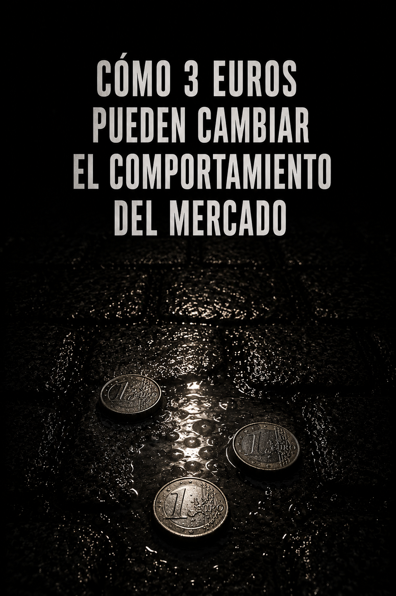

Artículo de opinión · Julio de 2026
Cómo 3 euros pueden cambiar el comportamiento del mercado

Hay decisiones económicas que llaman la atención por su magnitud y otras que pasan inadvertidas precisamente porque parecen insignificantes. Tres euros pertenecen, en apariencia, al segundo grupo. No alteran una nómina, no modifican una cuenta de resultados y difícilmente provocan una crisis de consumo. Sin embargo, cuando esos tres euros se aplican sobre millones de operaciones y recaen, además, sobre los productos de menor precio, dejan de ser una cantidad irrelevante para convertirse en una señal capaz de modificar el comportamiento del mercado.
Desde el 1 de julio de 2026, la Unión Europea aplica temporalmente un derecho de aduana fijo de 3 euros a las mercancías incluidas en envíos de hasta 150 euros procedentes de fuera de la Unión. La medida sustituye provisionalmente la exención arancelaria de la que disfrutaban estos envíos y permanecerá vigente, en principio, hasta el 1 de julio de 2028, cuando deberían comenzar a aplicarse los aranceles ordinarios correspondientes a cada producto.
La precisión es importante: no se trata necesariamente de tres euros por paquete ni de tres euros por cada unidad física. El cálculo se realiza atendiendo a las diferentes categorías arancelarias contenidas en el envío. Si un paquete incluye dos juguetes, un abrigo y tres frascos de champú, contiene tres categorías diferentes y soportaría un gravamen total de nueve euros. Así lo explica el propio Consejo de la Unión Europea al describir el funcionamiento de la medida.
La justificación oficial parece razonable. La Unión Europea sostiene que la anterior exención generaba una competencia desigual para los comerciantes europeos, incentivaba la infravaloración de las mercancías, dificultaba los controles de seguridad y aumentaba el impacto medioambiental asociado a la fragmentación de los envíos. Según los datos citados por el Consejo, en 2024 el 91 % de los envíos de comercio electrónico con un valor inferior a 150 euros procedía de China y hasta un 65 % de los pequeños paquetes podía estar infravalorado.
Hasta aquí, el argumento institucional.
Pero lo que me interesa no es discutir si Europa tiene motivos para intervenir. Los tiene. Lo que me interesa es observar qué ocurre cuando intenta corregir el mercado mediante una cantidad fija.
Un Arancel Fijo No Afecta A Todos Por Igual
Un arancel porcentual conserva una relación directa con el valor del producto. Si el porcentaje fuera del 10 %, un artículo de 10 euros soportaría un euro y otro de 100 euros soportaría diez. La carga relativa sería la misma.
Un gravamen fijo funciona de otra manera. Si una compra de 5 euros queda afectada por un coste adicional de 3 euros, la carga equivale al 60 % de su precio. Si el producto cuesta 30 euros, representa un 10 %. Y si cuesta 100 euros, solamente un 3 %. La cuantía es idéntica, pero su impacto económico no lo es.
La medida, por tanto, no penaliza especialmente el origen extracomunitario de los productos más caros. Penaliza, sobre todo, el modelo de negocio basado en enviar individualmente artículos de muy bajo precio desde fuera de la Unión.
No es una diferencia menor. Una persona puede aceptar pagar tres euros adicionales por un producto de cincuenta, pero probablemente se replantee una compra cuyo precio inicial era de dos o tres euros. En ese segmento, el gravamen puede borrar buena parte de la ventaja que justificaba acudir a una plataforma extranjera.
Por eso, además de una medida recaudatoria, se trata de un incentivo que altera decisiones, sea o no deliberado ese propósito.
¿Quién Paga Realmente Los Tres Euros?
La respuesta inmediata sería el consumidor, pero la incidencia real depende del poder de negociación de cada eslabón: el vendedor, la plataforma o el operador logístico. El coste puede trasladarse al precio final, absorberse mediante un recorte de margen, subvencionarse en determinados productos o compensarse elevando el importe mínimo del pedido.
Quién asuma finalmente el coste importa menos que el efecto agregado que genera. Ahí comienza el verdadero efecto de los tres euros: una cantidad que parece pequeña, observada operación por operación, puede alterar millones de decisiones cuando se aplica de manera sistemática. El dato relevante es el conjunto de comportamientos que la medida induce, más que el coste de un envío aislado.
La Respuesta Probablemente No Será Abandonar Europa
Sería ingenuo pensar que las grandes plataformas extracomunitarias se limitarán a aceptar una pérdida permanente de competitividad. Cuando una norma encarece un modelo operativo, las empresas no suelen abandonar automáticamente el mercado: modifican el modelo.
La reacción más lógica consistiría en reducir el envío individual desde el país de origen y aumentar la importación en grandes lotes. Los productos entrarían agrupados, se almacenarían dentro de la Unión y posteriormente se distribuirían al consumidor como mercancía ya situada en territorio europeo.
Esta posibilidad es una inferencia económica, no una finalidad declarada por las instituciones europeas. Sin embargo, encaja con la estructura del incentivo. Si el problema se concentra en millones de pequeños envíos directos, la respuesta empresarial natural es sustituirlos por importaciones consolidadas y distribución interior.
El vendedor extranjero no desaparecería. Cambiaría su arquitectura logística. Para competir eficazmente ya no bastaría con disponer de una fábrica, una plataforma digital y un sistema de transporte internacional. Serían necesarios almacenes europeos, inventarios locales, operadores aduaneros, capacidad para anticipar la demanda y una red de distribución de última milla.
Eso elevaría las barreras de entrada. Los pequeños vendedores tendrían más dificultades para adaptarse, mientras que las grandes plataformas contarían con capital, tecnología y volumen suficientes para reorganizar sus cadenas de suministro.
La medida concebida para equilibrar la competencia podría, por tanto, producir simultáneamente otro efecto: favorecer la concentración del mercado entre los operadores capaces de absorber la nueva complejidad.
El Verdadero Cambio Puede Estar En La Cadena De Valor
Cuando se habla de protección del comercio europeo, solemos imaginar una sustitución sencilla: el consumidor deja de comprar un producto asiático y empieza a adquirir otro fabricado en Europa. Pero esa no es la única respuesta posible, ni necesariamente la más probable.
El producto puede continuar fabricándose en Asia y seguir vendiéndose a través de la misma plataforma. Lo que cambiaría sería el lugar donde se almacena, se clasifica y se distribuye. Una parte mayor de la cadena de valor se trasladaría al interior de la Unión sin que necesariamente se trasladara la producción.
Europa podría captar actividad logística, recaudación, control aduanero e información sobre las mercancías. Las grandes plataformas conservarían el acceso al consumidor europeo. Los operadores logísticos ganarían volumen y relevancia. Los pequeños exportadores se volverían más dependientes de los intermediarios capaces de proporcionarles infraestructura dentro del mercado comunitario.
En ese escenario, los principales beneficiarios no serían necesariamente los fabricantes europeos que compiten con los productos importados. Podrían ser los grandes almacenes, los centros de distribución, los operadores aduaneros, las plataformas con inventario local y las empresas que controlan los puntos de entrada de las mercancías.
La Unión Europea presenta la medida como parte de una reforma más amplia dirigida a mejorar la equidad, la seguridad y la sostenibilidad del comercio electrónico. También ha previsto un futuro centro europeo de datos aduaneros y estudia una tasa de gestión distinta del arancel, cuyo importe y aplicación todavía deben determinarse.
Todo ello apunta a algo más profundo que una simple subida de precios. Europa está intentando recuperar capacidad de supervisión sobre un flujo comercial que había crecido con mayor rapidez que sus mecanismos de control.
Lo Que Realmente Consigue Europa
Hasta aquí podría parecer que Europa está intentando proteger a sus comerciantes frente a la competencia de las plataformas extracomunitarias. Sin embargo, existe otra lectura menos evidente y, desde mi punto de vista, mucho más interesante.
Quizá Europa haya comprendido que ya no puede impedir que una parte importante de los productos consumidos por sus ciudadanos se fabrique en Asia. Tampoco parece probable que pueda sustituir a corto plazo el dominio comercial y tecnológico alcanzado por las grandes plataformas chinas.
Pero puede hacer algo diferente: obligarlas a introducir una parte mayor de su cadena de valor dentro del territorio europeo.
Mientras cada producto viaja directamente desde China hasta el domicilio de un consumidor, Europa recibe la mercancía en el último momento. El producto ya se ha fabricado, vendido y cobrado. La Unión solo interviene en la frontera, enfrentándose a millones de paquetes de escaso valor cuya supervisión resulta costosa y limitada.
El escenario cambia cuando la plataforma importa grandes lotes, mantiene inventarios en Europa y distribuye posteriormente cada pedido desde un almacén comunitario.
La fabricación puede seguir estando en China y la venta puede continuar bajo el control de una plataforma china, pero entre ambas aparece una infraestructura localizada en Europa: puertos, almacenes, centros de clasificación, sistemas informáticos, operadores aduaneros, transportistas, trabajadores y redes de última milla.
Europa no recupera necesariamente la producción ni el control de la venta. Recupera el territorio por el que debe pasar la operación.
Y quien controla el territorio en el que se almacena y distribuye la mercancía obtiene algo más valioso que tres euros: obtiene trazabilidad, capacidad de inspección, actividad económica, inversión logística y una base mucho más accesible sobre la que aplicar sus normas.
El cambio también altera la posición negociadora de las plataformas. Una empresa que envía productos desde miles de kilómetros de distancia puede modificar con relativa facilidad sus rutas comerciales. Una empresa que ha invertido en almacenes, trabajadores, tecnología e inventarios dentro de la Unión se vuelve más dependiente del mercado europeo y de sus decisiones regulatorias.
Los tres euros funcionarían así como una palanca, orientada más a modificar el modelo basado en millones de pequeños envíos individuales que a encarecer aisladamente los artículos baratos. La alternativa más eficiente sería introducir la mercancía de forma consolidada y completar dentro de Europa las últimas fases de la cadena de valor.
El producto continuaría siendo asiático. La plataforma podría seguir siendo china. El consumidor seguiría comprando en la misma aplicación. Pero una parte mucho mayor de la operación económica habría quedado atrapada dentro del perímetro europeo.
La Paradoja
La medida que aparentemente pretende frenar a las grandes plataformas podría terminar acelerando su implantación física en Europa. Sin embargo, eso no significa necesariamente que la estrategia haya fracasado.
Europa podría estar aceptando que no controla el origen de la producción ni el canal de venta y concentrándose en aquello que todavía puede controlar: el acceso a quinientos millones de consumidores y las condiciones bajo las cuales las mercancías llegan hasta ellos.
Visto de esta manera, el gravamen no sería solamente una barrera aduanera. Sería una invitación difícil de rechazar: si una plataforma quiere conservar el mercado europeo, tendrá que acercar a Europa sus mercancías, sus almacenes, sus operadores y una parte creciente de su estructura.
Europa no habría conseguido que dejáramos de comprar productos chinos. Habría conseguido que China tuviera que traer hasta Europa una parte de la infraestructura necesaria para vendérnoslos.
La reconfiguración de la cadena de valor no modificaría necesariamente el origen de los productos ni el control de las ventas. Cambiaría el lugar en el que se almacena la mercancía, se organiza su distribución y se genera una parte creciente del valor económico.
Quizá los tres euros nunca fueran el verdadero objetivo. Pero tampoco sé si atraer hacia Europa una parte de la cadena de valor respondía a una estrategia deliberada del legislador o si fue simplemente el resultado de una carambola económica: una consecuencia surgida al intentar resolver un problema diferente.
En cualquiera de los dos casos, la medida podría terminar haciendo algo mucho más importante que recaudar tres euros: utilizar el acceso al consumidor europeo para obligar a las grandes plataformas extranjeras a trasladar al territorio de la Unión una parte de su estructura logística y operativa.